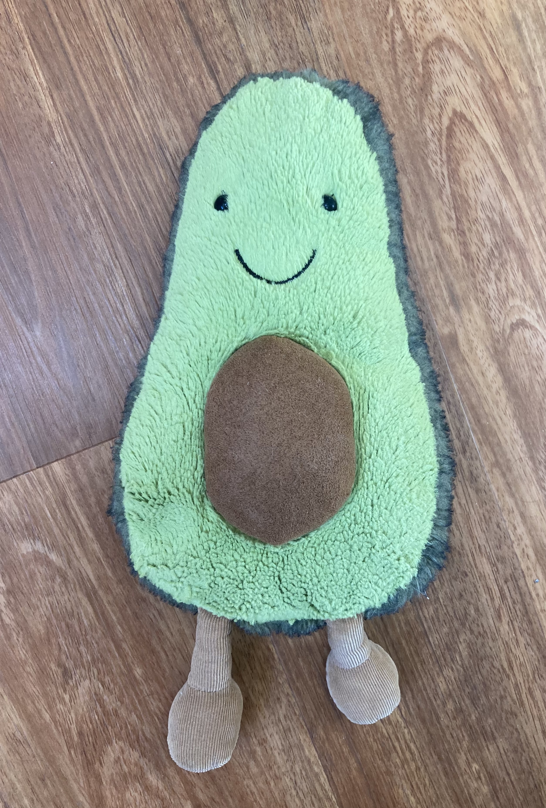

Avocado Fries

Description
These simple breaded avocados fries are just delightful! They are best
served warm immediately after preparation. Enjoy!!
Ingredients
- Avocado(s)
- Egg(s)
- Panko
- Oil for frying (peanut)
- Salt
- Tamarind Mayo (optional sauce for serving)
Steps
- Cut avocado(s) into slivers somewhere around a half-inch thick.
- Crack an egg into a shallow bowl and beat it.
- Put panko in another shallow bowl.
- Bread the avocado slices.
- First, dunk them in the egg.
- Then, dunk them in the panko.
-
Heat a generous amount of oil in the pan; about 1/4-inch deep should
do the trick!
-
Fry the avocado fries in batches until golden brown. Place them
on a plate with a paper towel and salt as desired.
-
Enjoy them warm off the griddle! They are great by themselves or
with a dipping sauce like tamarind mayo.
Back to home page